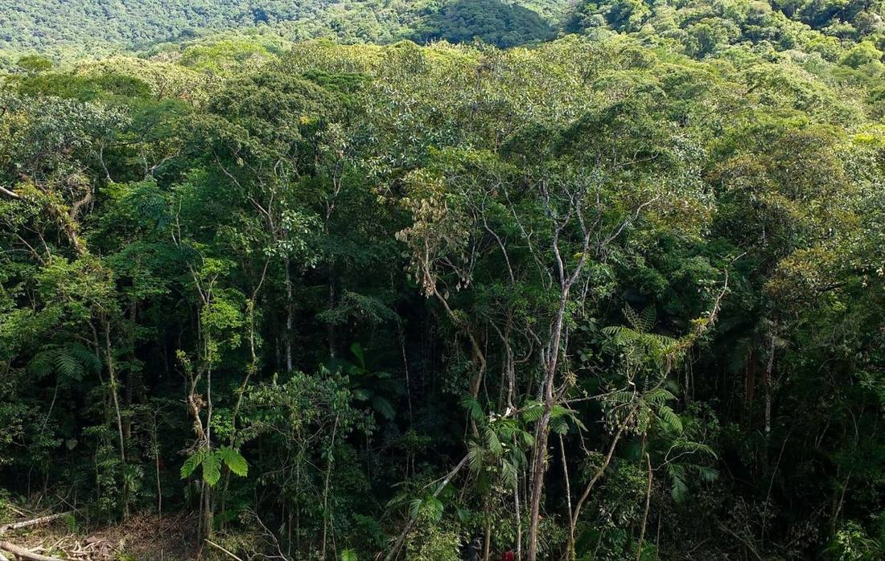
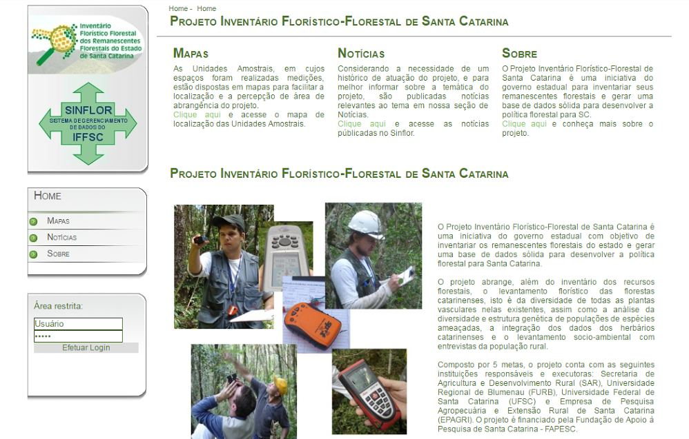

Traducido del original en portugués. Los títulos de publicaciones, las citas y los nombres se mantienen en su idioma original.
➤ Lista de especies arbóreas encontradas
➤ Resumen de las unidades de muestreo (Resumo das Unidades Amostrais)
➤ Estimaciones de atributos forestales (Estimativas de atributos florestais)
➤ Modelos de volumen, biomasa y necromasa
➤ Base de datos de densidad de la madera (Banco de dados de densidade da madeira)
➤ Acceso a la base de datos SINFLOR
Lista de especies
Lista de las especies encontradas en el componente arbóreo de los bosques evaluados por el FlorestaSC.
La lista contiene información sobre las especies, como grado de amenaza (Libro Rojo y CONSEMA), grupo ecológico*, formas de rareza (IFFSC, 2017 – Vol. 7), entre otras. También permite identificar en qué regiones fitoecológicas y cuencas hidrográficas se encontró cada especie.
*El grupo ecológico se definió con base en la literatura (Flora Ilustrada Catarinense, Projeto Madeira de SC, etc.) y en la revisión de especialistas del FlorestaSC.
AVISO: Los datos por municipio solo incluyen datos de parcelas, no de herbario, y suman 449 unidades de muestreo en 205 municipios. Como el objetivo es el análisis del estado, no hay parcelas en todos los municipios. Algunos no tienen unidades de muestreo por ser pequeños o porque ya no tienen bosque, entre otros motivos.
Na dúvida entre em contato: florestasc@furb.br
Los ejemplares de plantas arbóreas, epífitas, pteridófitas y herbáceas recolectados por el FlorestaSC fueron incorporados al Herbario FURB.
Los datos sobre las especies y los sitios de recolección están disponibles en plataformas en línea como:
Resumen de las unidades de muestreo
Los resúmenes de las unidades de muestreo están organizados en carpetas según las regiones fitoecológicas. También pueden consultarse mediante los enlaces del archivo lista_parcelas_comLink, que además contiene otra información, como región fitoecológica, municipio y cuenca hidrográfica.
Mapa de ubicación de las unidades de muestreo.
Estimaciones de atributos forestales
Las reservas medias estimadas para cada tipo forestal de Santa Catarina que se presentan a continuación se generaron con base en el «punto de muestreo», es decir, considerando todos los usos del suelo en las UA. Las estimaciones se basan en datos del Ciclo 1 de mediciones del FlorestaSC.
Más información sobre cómo se generaron las estimaciones en esta nota científica.
Reservas medias por hectárea (± intervalo de confianza del 95 %) y para el área total de bosque en cada tipología forestal de Santa Catarina, considerando árboles con DAP* ≥ 10 cm.
*DAP = diámetro a la altura del pecho, medido a 1,30 m del suelo.
Modelos alométricos
Modelos alométricos usados actualmente por el FlorestaSC para predecir la altura total, el volumen del fuste y la biomasa aérea por unidad de muestreo
Modelos alométricos para predecir volumen y biomasa elaborados por el FlorestaSC
Modelo para predecir el volumen total de árboles del Bosque Ombrófilo Denso, construido a partir de árboles muestreados en un bosque secundario en Guaramirim (SC).
Esta planilla de Excel está programada para calcular el volumen total con el modelo construido por el FlorestaSC.
Modelos genéricos y específicos para predecir la biomasa total de árboles del Bosque Ombrófilo Denso, construidos a partir de árboles muestreados en un bosque secundario en Guaramirim (SC).
Modelos genéricos y específicos para predecir la biomasa total de especies arborescentes en Santa Catarina.
Densidad de la madera
La densidad básica (o masa específica básica) es una propiedad de la madera definida como la razón entre la masa seca de la madera y su volumen saturado (o verde). Es importante para estimar la biomasa forestal y en estudios de ecología funcional, tecnología de la madera, entre otros.
En 2014 el FlorestaSC comenzó a recolectar muestras para cuantificar la densidad básica de la madera de especies nativas en un área de Bosque Ombrófilo Denso en Guaramirim (SC). Para ampliar la base de datos, se han recolectado nuevas muestras durante el 2.º Ciclo de Mediciones del FlorestaSC y también en propiedades privadas. Hasta el momento, incluidas las de Guaramirim, el FlorestaSC tiene la densidad básica de la madera (kg/m³) de 153 especies arbóreas: 86 muestreadas en el Bosque Ombrófilo Denso, 46 en el Bosque Ombrófilo Mixto y 42 en el Bosque Estacional Deciduo. La base incluye las especies con mayor área basal en estos tipos forestales, como Alchornea triplinervia (tanheiro), Hieronyma alchorneoides (licurana), Miconia cinnamomifolia (jacatirão), Lithraea brasiliensis (bugre), Mimosa scabrella (bracatinga), Cupania vernalis (camboatá-vermelho) y Luehea divaricata (açoita-cavalo), entre otras.
La publicación de abajo contiene información detallada sobre la elaboración de la base de datos, así como planillas con los datos de densidad de la madera (descargue los materiales suplementarios).
Publicación:
Oliveira, L.Z.; Uller, H.F.; Klitzke, A.R; Eleotério, J.R; Vibrans, A.C. Towards the fulfillment of a knowledge gap: Wood densities for species of the subtropical Atlantic Forest. Data, v. 4, p. 104, 2019.
En los materiales suplementarios de la publicación también se ofrecen datos de densidad básica de la madera (kg/m³) de 719 especies arbóreas observadas por el FlorestaSC. La densidad de las especies no muestreadas se determinó a partir de los datos de las 153 especies y de la base Global Wood Density (vea la publicación para más detalles). Además, se ofrece otra planilla con la densidad básica media de la madera de 477 unidades de muestreo del FlorestaSC.
Es importante destacar que la base de datos se actualizará a medida que se determine la densidad de la madera de otras especies.
Tipologías forestales de Santa Catarina y sitios de recolección de muestras para determinar la densidad básica de la madera.


Surtidos (aplicación)
La explotación intensiva de los bosques nativos de la Región Sur de Brasil agotó las reservas de maderas de alto valor, como la canela-preta, la imbuia y la grápia. Las restricciones legales y los cambios socioeconómicos posteriores impulsaron la expansión de los bosques secundarios. Además de su importancia ecológica, estos bosques tienen un potencial productivo prometedor, con especies de crecimiento rápido y madera de buena calidad.

Bosque Ombrófilo Denso secundario manejado en Guaramirim/SC. Créditos: Heitor F. Uller.
En este contexto, el FlorestaSC desarrolló una aplicación web para predecir surtidos de trozas en bosques secundarios, con el fin de contribuir al manejo sostenible de estos bosques en la región. (Aplicación web para predecir surtidos de trozas en bosques secundarios)
La aplicación calcula el número y el volumen de trozas por clases dimensionales (diferentes longitudes y diámetros mínimos) que pueden extraerse de un tronco de especies de tres tipos forestales: Bosque Ombrófilo Denso, Bosque Ombrófilo Mixto y Bosque Estacional Deciduo.
Los surtidos de trozas pueden predecirse para especies como Miconia cinnamomifolia (jacatirão), Hieronyma alchorneoides (licurana) y Mimosa scabrella (bracatinga), que se destacan por su crecimiento rápido y su madera de buena calidad.

Manejo de Hieronyma alchorneoides (licurana) en bosque secundario en Guaramirim/SC y troza de la especie siendo aserrada. Créditos: Alfredo C. Fantini y Heitor F. Uller.
La aplicación se desarrolló en lenguaje R (paquete «shiny») y usa modelos de ahusamiento construidos por el FlorestaSC a partir de un conjunto de datos recogido en todo Santa Catarina, con cerca de 2000 troncos y 300 especies arbóreas.
La aplicación tiene 10 campos en los que el usuario debe elegir una opción o ingresar información. El uso de cada campo se explica en este TUTORIAL.
¿Cómo citar?
Oliveira, L.Z.; Vibrans, A.C. A web tool for predicting log assortments in secondary Atlantic forests using regional taper models. Scientia Agricola v. 83, e20250137, 2026.

Miconia cinnamomifolia (jacatirão).
SUGESTÃO DE LEITURA:
Fantini, A.C.; Siminski, A.; Gaio, M.F. Madeira de florestas secundárias em SC: Nova fonte de renda para os agricultores. Agropecuária Catarinense, v. 29, n. 2, p. 15–18, 2016.

Base de datos SINFLOR
SINFLOR
Sistema de Gestión de Datos del FlorestaSC Más información →

El Sistema de Gestión de Datos del FlorestaSC – SINFLOR – se desarrolló para registrar todos los datos recogidos en las unidades de muestreo del FlorestaSC y generar diversas estimaciones, que se devuelven al usuario en forma de informes.
Los usuarios registrados en el SINFLOR tienen amplio acceso a datos e informes. Los no registrados están limitados a la información definida como pública (informes básicos, mapas e información sobre las especies encontradas):
Generación de informes: *Formato: informe en línea o archivo (.csv)
Sinflor ofrece informes con datos del 1.er ciclo (2007-2010) y del
2.º ciclo de mediciones (2014-2019).
El sistema permite al usuario...
- Aplicar filtros para acceder a los datos por fitofisonomía, estadio sucesional, cuenca hidrográfica, microrregión, mesorregión, municipio o unidad de conservación;
- Generar datos con base en el área total de la unidad de muestreo («Área levantada») o solo en el área efectivamente cubierta por bosque dentro de la UA («Área con bosque»);
- Elegir si incluir o no los árboles muertos en los cálculos, con las opciones «con árboles muertos» y «sin árboles muertos» (es decir, solo árboles vivos);
- Acceder a los datos como «Informe» (ventana emergente) o como «Archivo», es decir, planilla Excel (.csv), con el botón «descargar»;
- En algunos informes se pueden incluir campos adicionales (cuadro «Campos a mostrar»).
Lista de informes disponibles:
Estructura horizontal: tabla fitosociológica de las especies (número de individuos, área basal, densidad, dominancia, frecuencia, valor de importancia, valor de cobertura y valores máximos, medios y mínimos de DAP y altura (fuste y total)).
Estructura diamétrica: calcula número de individuos, área basal, densidad y dominancia por clase, por parcela, por parcela-clase, por especie-parcela y por especie-clase.
Estructura vertical – posición sociológica: estima la importancia de las especies según su participación en los estratos verticales. Número de individuos por clase de altura y por especie (componente arbóreo). Posición sociológica absoluta (PSA) y relativa (PSR). Regeneración natural: número de individuos por clase de altura y por especie (componente regenerante). Clase absoluta de tamaño (CAT), clase relativa de tamaño (CRT), regeneración natural relativa (RNR) y VIA: valor de importancia ampliado. (Valor de importancia ampliado)
Florística: ocurrencia de especies y familias botánicas en las unidades de muestreo (componentes arbóreo, regenerante y florístico).
Diversidad: calcula la riqueza de especies y los índices de Shannon-Weaver (H'), Simpson (C) y Pielou (J) por unidad de muestreo.
Matriz de datos: devuelve matrices de ocurrencia (binarias de presencia 1/ausencia 0) o cuantitativas (número de individuos, área basal, densidad/dominancia) de las especies por unidad de muestreo (estrato de árboles con DAP ≥ 10 cm).
Estimaciones: genera estimaciones poblacionales (medias e intervalos de confianza) para densidad (ind./ha), diámetro (cm), altura (m), área basal (m²/ha), volumen de fustes (m³/ha), peso seco (Mg/ha), carbono (Mg/ha) y riqueza de especies.
Videos explicativos
El FlorestaSC tiene una gran cantidad de información sobre los bosques catarinenses. Para que el público pueda acceder a ella y consultarla, el FlorestaSC usa recursos en línea y ha desarrollado productos y herramientas para poner a disposición sus datos.
Con el objetivo de instruir y capacitar al público en el uso de las herramientas de consulta de datos del FlorestaSC, en esta sección presentamos una serie de videos explicativos. En ellos explicamos, por ejemplo, los índices e indicadores fitosociológicos, el uso del Sinflor para generar cálculos fitosociológicos por tipo de bosque y límite geográfico (municipios y otros), la consulta de información florística en plataformas virtuales y la obtención de datos del mapeo del uso del suelo del FlorestaSC, además de una visión general de nuestro sitio y de los libros del FlorestaSC.
Aproveche para suscribirse a nuestro canal de YouTube.
Video: Portal del FlorestaSC
El video recorre el contenido del portal del FlorestaSC y orienta al usuario en la búsqueda de información y productos generados por el FlorestaSC.
Los principales temas abordados en este video son:
- Visión general del portal del FlorestaSC
- Acceso a los resultados de los Ciclos 1 y 2 de medición
- Acceso a los productos del FlorestaSC (lista de especies, resumen de las parcelas, estimaciones, base de datos, publicaciones y otros)
- El mapeo de la cobertura forestal de Santa Catarina
Video: Plataformas para consultar datos sobre la flora y colecciones botánicas
En este video se explica el uso de cuatro plataformas virtuales importantes para consultar información sobre especies de plantas y colecciones botánicas, incluidos los registros del FlorestaSC.
Público objetivo: gestores de unidades de conservación
Las plataformas presentadas son:
Video: Plataforma de mapas del FlorestaSC y descarga de archivos
En este video conocerá un poco el proyecto MapeiaSC y su plataforma de datos y mapas. También aprenderá a registrarse en la plataforma y a descargar shapefiles y otros tipos de archivo.
- El mapeo de la cobertura forestal de Santa Catarina y el acceso a la plataforma de mapas del FlorestaSC
- Contenido de la plataforma: capas (layers), documentos y mapas
- Descarga de archivos shape y raster
Video: Generación de informes de cálculo en el Sinflor
El objetivo de este video es orientar a los usuarios en el uso del Sinflor para generar listas de especies e informes de estimaciones e índices fitosociológicos a partir del conjunto de datos del FlorestaSC.
- La base de datos Sinflor
- Filtros básicos de los informes y algunos conceptos, como área levantada x área con bosque y parcelas de la grilla x parcelas complementarias
- Informes públicos del Sinflor: filtros específicos y ejemplos
Video: ¿Cómo genera el FlorestaSC las estimaciones de atributos forestales?
En este video se muestra cómo se generan las estimaciones de atributos forestales con base en los datos del FlorestaSC.
Los principales temas abordados son:
- Conceptos de población, muestreo e inferencia estadística
- Muestreo del FlorestaSC
- Estimaciones de atributos forestales del FlorestaSC
- Generación de estimaciones de atributos forestales en el SINFLOR (Sistema de Inventario Forestal)
Video: ¿Qué es la diversidad biológica?
- Conceptos relacionados con la diversidad
- Índices de diversidad
- Reflexiones sobre diversidad y gestión ambiental
- Generación de estimaciones de diversidad en el SINFLOR (Sistema de Inventario Forestal)
Video: Mortalidad de los árboles
- Causas naturales y antrópicas de la mortalidad de los árboles
- Monitoreo de la mortalidad
- Distribución espacial de la mortalidad en el estado de Santa Catarina
- Principales familias afectadas por la mortalidad
Paneles interactivos
Los paneles interactivos de datos (dashboards) permiten consultas rápidas sobre las unidades de muestreo y las especies arbóreas evaluadas por el FlorestaSC mediante filtros de búsqueda.
Las consultas a los paneles permiten responder preguntas como:
- ¿Qué especies de árboles encontró el FlorestaSC en un municipio determinado?
- ¿En qué municipios encontró el FlorestaSC una especie determinada?
- ¿Qué especies amenazadas evaluó el FlorestaSC y dónde se encontraron?
- ¿Qué unidades de conservación visitó el FlorestaSC y qué especies se encontraron en ellas?
Los paneles de datos disponibles son:
- Especies arbóreas y datos ecológicos
- Especies arbóreas en las unidades geográficas
- Especies arbóreas en las unidades de conservación
HAGA CLIC AQUÍ y acceda a nuestros paneles de datos: (CLIQUE AQUI)

Página migrada de floresta.sc.gov.br.